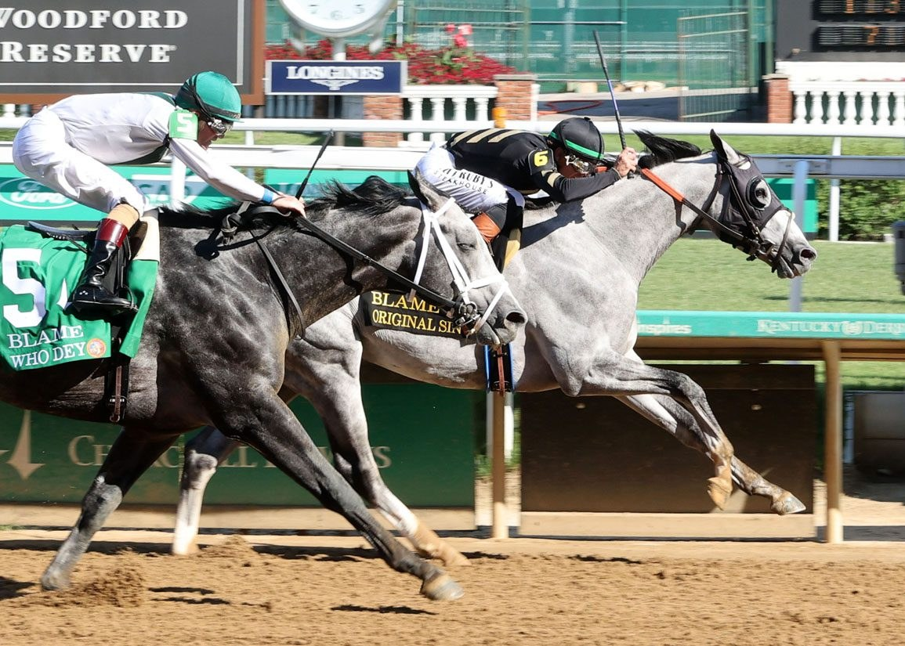

Original Sin gana el Grupo III Blame Stakes en Churchill Downs
El hijo de Curlin, criado y propiedad de Calumet Farm, se impuso el sábado en la prueba de Grupo III disputada en el hipódromo de Louisville, firmando su primer triunfo en una carrera de categoría. Who Dey y Hit Show completaron un podio dominado por ejemplares de capa torda.

Original Sin, hijo del semental Curlin y criado por Calumet Farm, conquistó el sábado el Blame Stakes (GIII) en el hipódromo de Churchill Downs tras una actuación táctica que le permitió tomar el mando a tres furlongs de meta. El ejemplar de capa torda logró resistir en los metros finales el ataque del también tordillo Who Dey, hijo de Liam's Map y criado en Ohio, que terminó segundo en una llegada apretada. Hit Show, por Candy Ride (Arg), completó el podio tras verse atrapado en el tráfico durante buena parte del recorrido.
La victoria supone el primer triunfo de Original Sin en una carrera de categoría Grupo III, escalón que confirma su proyección tras una preparación paciente en las instalaciones de Calumet Farm. El ejemplar venció en una jornada que dejó un podio inusual, con tres caballos de capa torda ocupando las tres primeras posiciones —un hecho estadísticamente poco frecuente en el turf norteamericano de élite—. La prueba se disputó en Churchill Downs, escenario tradicional del Kentucky Derby y uno de los hipódromos de referencia del circuito estadounidense.
— Redacción de Galope al Día